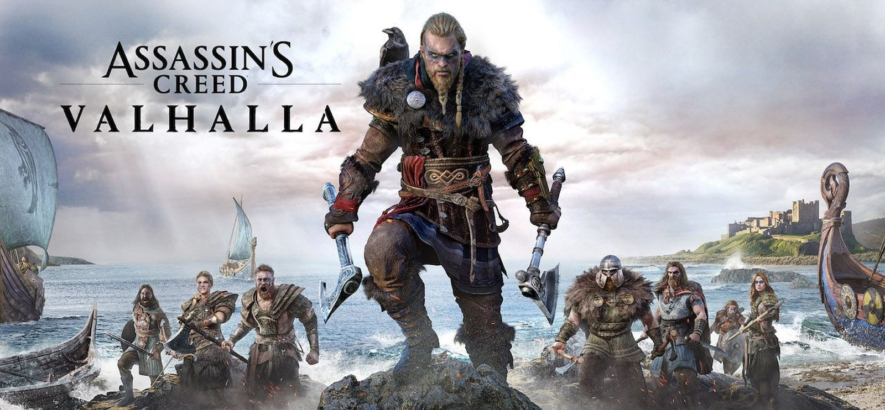
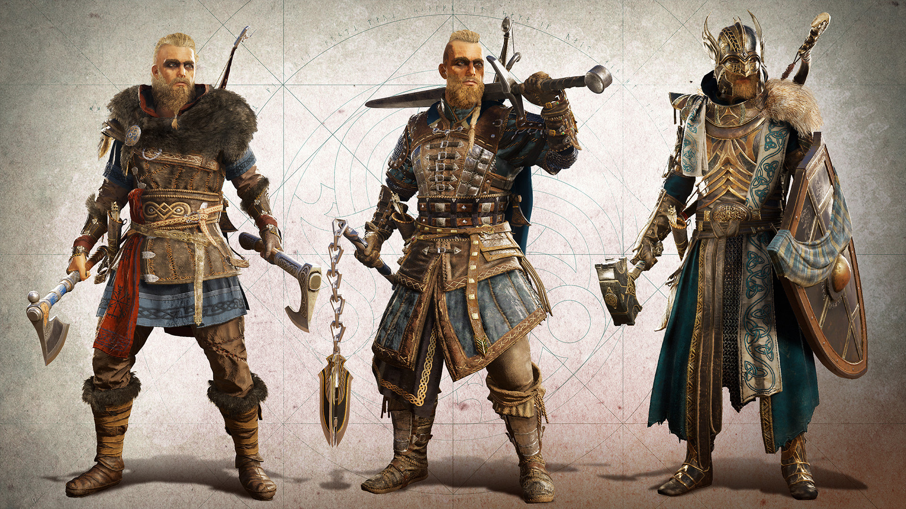
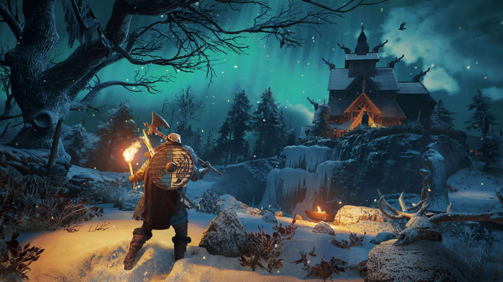
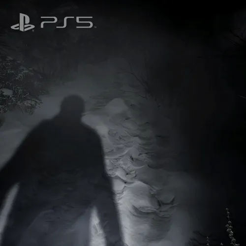
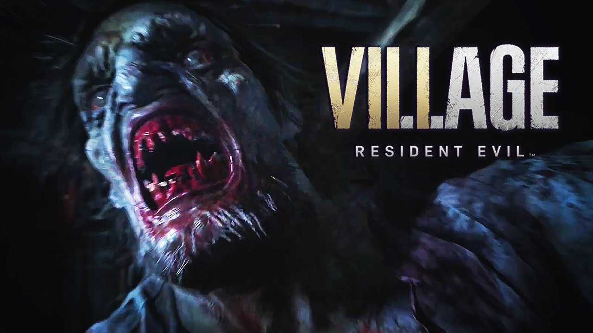
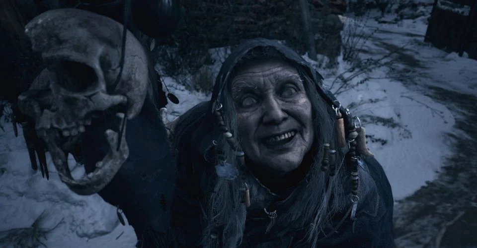
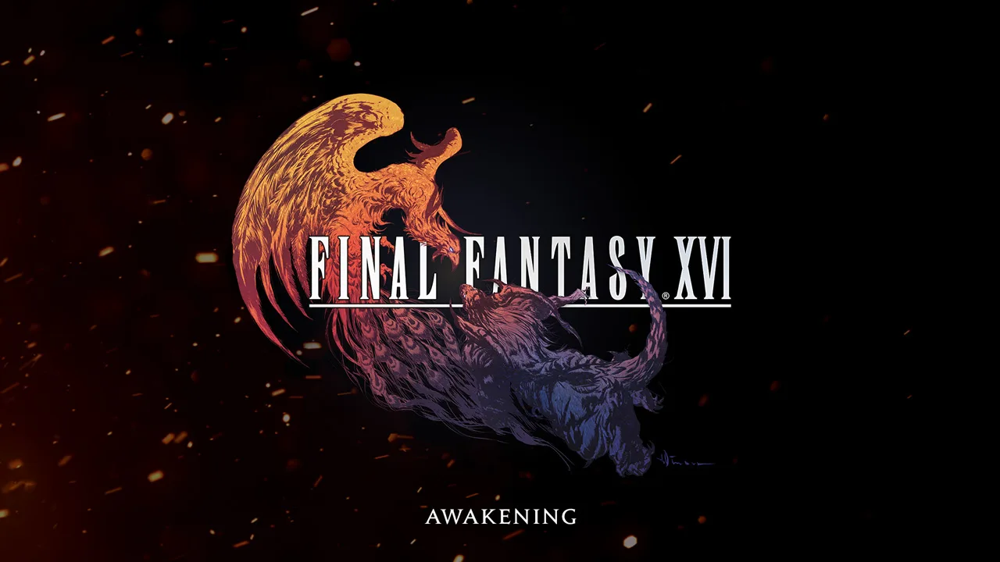
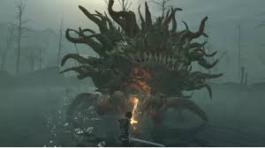
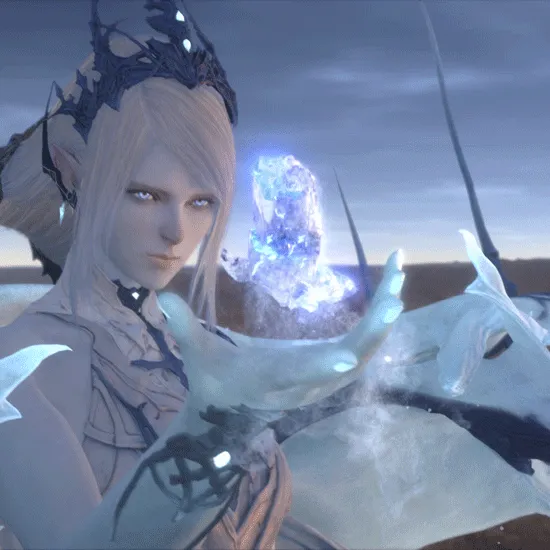

Tiga game franchise series paling ditunggu di console Playstation 5..!!
Sony membutuhkan waktu tujuh tahun untuk memproduksi sebuah console terbaru. Semenjak
Playstation 4 dirilis untuk pertama kali 15 november 2013 di North America, produk tersebut terjual
hampir 100 juta unit di seluruh dunia. Kini dengan pencapaian tersebut tak pelak Sony percaya
Playstation 5 akan menyamai atau mungkin melebihi penjualan tersebut. Faktor ini
diperkuat dengan spek hardware nya yang lebih canggih seperti berikut:
Selain dari spek console sendiri, berikut adalah tiga game franchise series yang paling ditunggu
untuk next-gen console ini adalah:
Assassin's Creed Valhalla

Ac Valhalla
Tidak dipungkiri, Assassin's Creed series merupakan sebuah game yang sangat sukses, dimulai dari
seri Altair hingga seri kakak beradik Alexios-Kassandra di AC Odyssey. Perubahan mekanisme gameplay
nya seri demi seri mengalami peningkatan, dari mekanik stealth hingga slash saat menghabisi musuh

kustomisasi karakter
Dengan akan segera muncul nya AC Valhalla ini player tentu berharap untuk dapat memainkan sebuah
gameplay yang fresh, yang dimana sebagian orang menganggap AC terlalu monoton karena quest maupun
looting nya terlalu repetitif, sebagian pecinta AC tetap menanti kehadiran Eivor di AC Valhalla ini.
Dilihat dari trailer yang dirilis ubisoft, gameplay nya tidak akan jauh berbeda dengan seri sebelum
nya, AC Valhalla ini dijadwalkan rilis terlebih dahulu 10 November 2020 untuk PS4.

Mode built Tribe
Resident Evil (VIII)age
RE 8
Pecinta genre game horror tidak mungkin tidak mengenal series dari developer asal jepang ini, yak
Capcom dengan resident evil nya. Resident evil 8 (village) akan menjadi series mayor ke sepuluh
resident evil series dan akan menjadi sekuel dari resident evil 7. Belum ada tanggal rilis resmi
dari Capcom, tapi diperkirakan game ini akan hadir tahun 2021.
Tidak seperti series Re-Remake, Capcom menekan kan sensasi horror yang dialami ethan secara real
dialami oleh player. Setelah Capcom berani bereksperimen dengan gameplay yang mengusung fps di
resident evil 7, kini player akan merasakan kembali di resident evil 8

Fps mode
Dilihat dari trailer yang telah dirilis, konsep cerita nya mungkin mirip dengan resident evil 4,
dimana kita akan berada pada sebuah desa/village untuk menguak okultisme yang terjadi. Game yang
dibuat dengan Re engine ini tentu akan terasa sangat impresif di Playstation 5
.

Musuh baru werewolf

Witch?
Final Fantasy XVI Awakening

FF XVI theme
Square-enix tidak pernah lepas dengan image RPG yang sudah melekat selama berpuluh puluh tahun.
Reputasi tersebut memang pantas karena banyak game RPG yang berkualitas telah dihadirkan, bahkan
seakan sudah menjadi trademark bagi Square-enix. Setelah merilis Final fantasy 7 Remake, kini hadir
project game teranyar Final Fantasy XVI.
karakter utama
Rumor menyebutkan FF XVI ini di produser dan sutradarai oleh Naoki Yoshida (yang juga produser dan
sutradara FF 14). Ditambah dengan merekrut Ryota Suzuki (Combat Director DMC 5) game FF XVI akan
memberi sebuah new experience gameplay dalam seri ini. sekilas dilihat dari trailer nya combat
gameplay nya memang sangat memukau seperti DMC 5.

Battle dengan Marlboro
Square-Enix jelas tidak akan main-main dengan graphic yang akan ditampilkan. Belum ada kabar atau
info game ini kapan dirilis, tapi semoga proses pengerjaan nya tidak selama FF XV.

Shiva
Nah diantara ketiga game franchise Series tersebut, game manakah yang kamu nantikan di
next-gen console Playstation 5?